<html><head><style>
    body { background-color: #fff; color: #333;	font: 14px/20px "HelveticaNeue-Light", "HelveticaNeue", Helvetica, Arial, sans-serif; }
  </style></head><body><h1>AFL Fuzzer Status</h1><h3>Generated by afl-monitor 1.0</h3><h2 style="margin-top:50px">Summary</h2><table style="border: 1 solid #000;"><tr><td>Time:</td><td><b>2017/2/2 Thursday 00:24:49 JST</b></td></tr><tr><td>Fuzzers (Alive/Total):</td><td><b>62</b> / <b>62</b></b></td></tr></td></tr><tr><td>Total Executions:</td><td><b>65,845,798</b><span style="color: #98DF00"> (+201,176.00)</span></td></tr><tr><td>Current Speed:</td><td><b>2,606.82</b><span style="color: #98DF00"> (+79.84)</span> execs/second</td></tr><tr><td>Average Speed per Core:</td><td><b>42.05</b><span style="color: #98DF00"> (+1.29)</span> execs/second</td></tr><tr><td>Paths Found (Favs/All):</td><td><b>10,170</b><span style="color: #98DF00"> (+3.00)</span> / <b>136,232</b><span style="color: #98DF00"> (+3.00)</span>
</td></tr><tr><td>Pending (Favs/All):</td><td><b>261</b><span style="color: #FA023C"> (-29.00)</span> / <b>87,814</b><span style="color: #FA023C"> (-107.00)</span></td></tr><tr><td>Average Stability:</td><td><b>98.76%</b></td></tr><tr><td>Most Stable Fuzzer:</td><td><b>100.00%</b></td></tr><tr><td>Least Stable Fuzzer:</td><td><b>61.36%</b></td></tr><tr><td>Average Cycle Complete</td><td><b>108</b></td></tr><tr><td>Maximum Cycle Complete</td><td><b>361</b> (+2.00)</td></tr><tr><td>Last Path:</td><td><b>0 hours 01 minutes 32 seconds</b> ago</td></tr><tr><td>Last Hang:</td><td><b>0 hours 00 minutes 43 seconds</b> ago</td></tr><tr><td>Last Crash:</td><td><b>0 hours 07 minutes 30 seconds</b> ago</td></tr><tr><td>Unique Crashes:</td><td><b>75</b></td></tr></table><h2 style="margin-top:50px">Per-Fuzzer Statistics</h2><h3>lemon-59</h3><table><tr><td>Status:</td><td><b><span style="color: #98DF00">ALIVE</span></b></td></tr><tr><td>Executions:</td><td><b>1,007,619</b></td></tr><tr><td>Current Speed:</td><td><b>46.82</b> execs/second</td></tr><tr><td>Paths Found (Favs/All):</td><td><b>245</b> / <b>3,340</b></td></tr><tr><td>Pending (Favs/All):</td><td><b>0</b> / <b>2,115</b></td></tr><tr><td>Stability:</td><td><b>99.60%</b></td></tr><tr><td>Cycle:</td><td><b>17</b></td></tr><tr><td>Last Path:</td><td><b>0 hours 03 minutes 01 seconds</b> ago</td></tr><tr><td>Last Hang:</td><td><b>0 hours 14 minutes 32 seconds</b> ago</td></tr><tr><td>Last Crash:</td><td><b>3 hours 46 minutes 43 seconds</b> ago</td></tr><tr><td>Unique Crashes:</td><td><b>1</b></td></tr></table><div>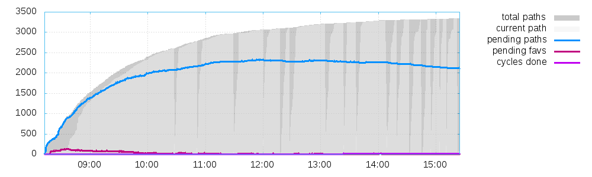</div><div></div><div>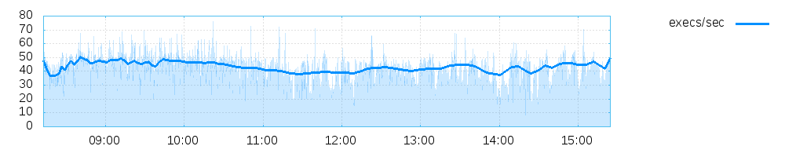</div><h3>lemon-58</h3><table><tr><td>Status:</td><td><b><span style="color: #98DF00">ALIVE</span></b></td></tr><tr><td>Executions:</td><td><b>1,169,473</b></td></tr><tr><td>Current Speed:</td><td><b>45.94</b> execs/second</td></tr><tr><td>Paths Found (Favs/All):</td><td><b>1</b> / <b>12</b></td></tr><tr><td>Pending (Favs/All):</td><td><b>0</b> / <b>0</b></td></tr><tr><td>Stability:</td><td><b>100.00%</b></td></tr><tr><td>Cycle:</td><td><b>126</b></td></tr><tr><td>Last Path:</td><td><b>/</b> ago</td></tr><tr><td>Last Hang:</td><td><b>0 hours 43 minutes 53 seconds</b> ago</td></tr><tr><td>Last Crash:</td><td><b>/</b> ago</td></tr><tr><td>Unique Crashes:</td><td><b>0</b></td></tr></table><div>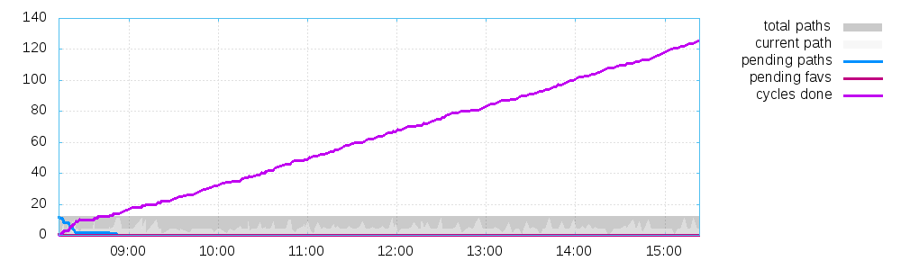</div><div>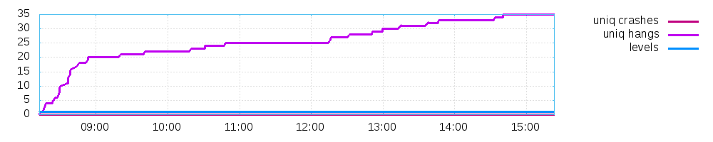</div><div>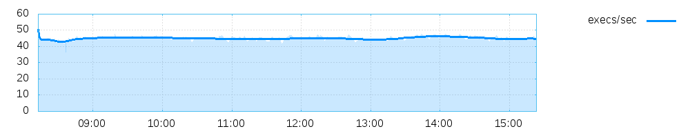</div><h3>lemon-9</h3><table><tr><td>Status:</td><td><b><span style="color: #98DF00">ALIVE</span></b></td></tr><tr><td>Executions:</td><td><b>1,009,425</b></td></tr><tr><td>Current Speed:</td><td><b>23.68</b> execs/second</td></tr><tr><td>Paths Found (Favs/All):</td><td><b>250</b> / <b>3,349</b></td></tr><tr><td>Pending (Favs/All):</td><td><b>2</b> / <b>2,025</b></td></tr><tr><td>Stability:</td><td><b>99.69%</b></td></tr><tr><td>Cycle:</td><td><b>15</b></td></tr><tr><td>Last Path:</td><td><b>0 hours 03 minutes 43 seconds</b> ago</td></tr><tr><td>Last Hang:</td><td><b>0 hours 01 minutes 43 seconds</b> ago</td></tr><tr><td>Last Crash:</td><td><b>1 hours 21 minutes 20 seconds</b> ago</td></tr><tr><td>Unique Crashes:</td><td><b>2</b></td></tr></table><div></div><div>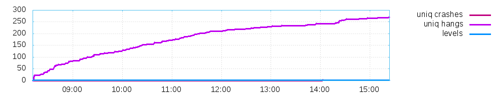</div><div></div><h3>lemon-8</h3><table><tr><td>Status:</td><td><b><span style="color: #98DF00">ALIVE</span></b></td></tr><tr><td>Executions:</td><td><b>976,543</b></td></tr><tr><td>Current Speed:</td><td><b>45.40</b> execs/second</td></tr><tr><td>Paths Found (Favs/All):</td><td><b>248</b> / <b>3,358</b></td></tr><tr><td>Pending (Favs/All):</td><td><b>1</b> / <b>2,161</b></td></tr><tr><td>Stability:</td><td><b>99.63%</b></td></tr><tr><td>Cycle:</td><td><b>15</b></td></tr><tr><td>Last Path:</td><td><b>0 hours 03 minutes 10 seconds</b> ago</td></tr><tr><td>Last Hang:</td><td><b>0 hours 00 minutes 44 seconds</b> ago</td></tr><tr><td>Last Crash:</td><td><b>1 hours 11 minutes 14 seconds</b> ago</td></tr><tr><td>Unique Crashes:</td><td><b>3</b></td></tr></table><div></div><div>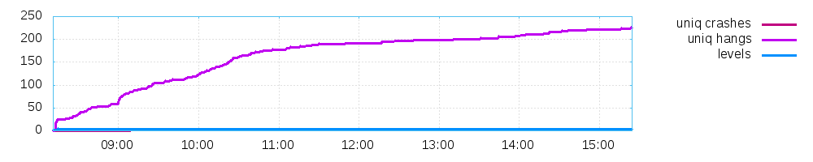</div><div>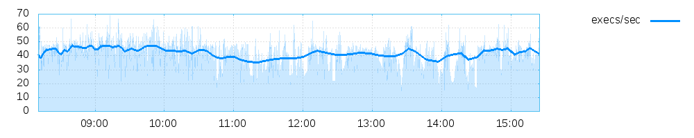</div><h3>lemon-5</h3><table><tr><td>Status:</td><td><b><span style="color: #98DF00">ALIVE</span></b></td></tr><tr><td>Executions:</td><td><b>939,921</b></td></tr><tr><td>Current Speed:</td><td><b>23.97</b> execs/second</td></tr><tr><td>Paths Found (Favs/All):</td><td><b>251</b> / <b>3,359</b></td></tr><tr><td>Pending (Favs/All):</td><td><b>2</b> / <b>2,242</b></td></tr><tr><td>Stability:</td><td><b>99.66%</b></td></tr><tr><td>Cycle:</td><td><b>12</b></td></tr><tr><td>Last Path:</td><td><b>0 hours 03 minutes 08 seconds</b> ago</td></tr><tr><td>Last Hang:</td><td><b>0 hours 08 minutes 09 seconds</b> ago</td></tr><tr><td>Last Crash:</td><td><b>1 hours 13 minutes 45 seconds</b> ago</td></tr><tr><td>Unique Crashes:</td><td><b>2</b></td></tr></table><div></div><div>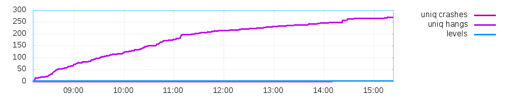</div><div>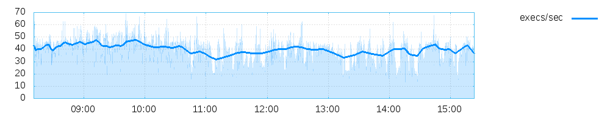</div><h3>lemon-4</h3><table><tr><td>Status:</td><td><b><span style="color: #98DF00">ALIVE</span></b></td></tr><tr><td>Executions:</td><td><b>1,186,481</b></td></tr><tr><td>Current Speed:</td><td><b>46.55</b> execs/second</td></tr><tr><td>Paths Found (Favs/All):</td><td><b>1</b> / <b>12</b></td></tr><tr><td>Pending (Favs/All):</td><td><b>0</b> / <b>0</b></td></tr><tr><td>Stability:</td><td><b>100.00%</b></td></tr><tr><td>Cycle:</td><td><b>353</b></td></tr><tr><td>Last Path:</td><td><b>/</b> ago</td></tr><tr><td>Last Hang:</td><td><b>0 hours 25 minutes 24 seconds</b> ago</td></tr><tr><td>Last Crash:</td><td><b>/</b> ago</td></tr><tr><td>Unique Crashes:</td><td><b>0</b></td></tr></table><div></div><div>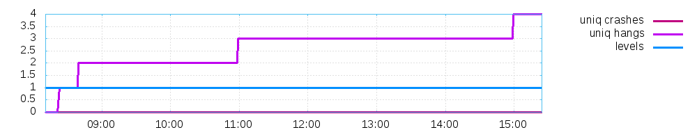</div><div>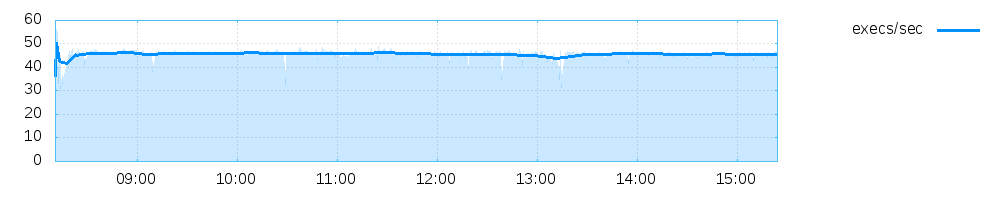</div><h3>lemon-7</h3><table><tr><td>Status:</td><td><b><span style="color: #98DF00">ALIVE</span></b></td></tr><tr><td>Executions:</td><td><b>1,180,571</b></td></tr><tr><td>Current Speed:</td><td><b>45.62</b> execs/second</td></tr><tr><td>Paths Found (Favs/All):</td><td><b>1</b> / <b>12</b></td></tr><tr><td>Pending (Favs/All):</td><td><b>0</b> / <b>0</b></td></tr><tr><td>Stability:</td><td><b>100.00%</b></td></tr><tr><td>Cycle:</td><td><b>361</b></td></tr><tr><td>Last Path:</td><td><b>/</b> ago</td></tr><tr><td>Last Hang:</td><td><b>2 hours 04 minutes 13 seconds</b> ago</td></tr><tr><td>Last Crash:</td><td><b>/</b> ago</td></tr><tr><td>Unique Crashes:</td><td><b>0</b></td></tr></table><div>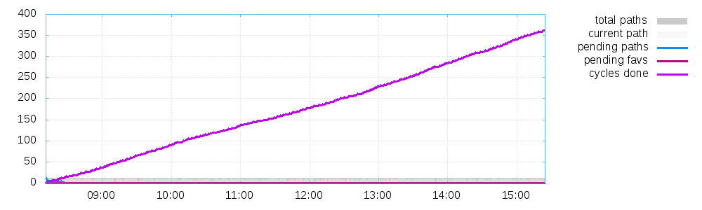</div><div>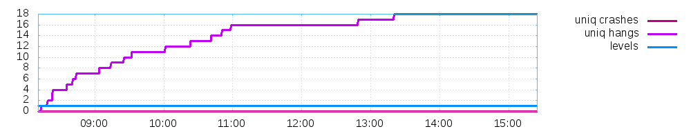</div><div></div><h3>lemon-6</h3><table><tr><td>Status:</td><td><b><span style="color: #98DF00">ALIVE</span></b></td></tr><tr><td>Executions:</td><td><b>956,309</b></td></tr><tr><td>Current Speed:</td><td><b>59.09</b> execs/second</td></tr><tr><td>Paths Found (Favs/All):</td><td><b>246</b> / <b>3,391</b></td></tr><tr><td>Pending (Favs/All):</td><td><b>1</b> / <b>2,082</b></td></tr><tr><td>Stability:</td><td><b>99.66%</b></td></tr><tr><td>Cycle:</td><td><b>13</b></td></tr><tr><td>Last Path:</td><td><b>0 hours 04 minutes 21 seconds</b> ago</td></tr><tr><td>Last Hang:</td><td><b>0 hours 04 minutes 19 seconds</b> ago</td></tr><tr><td>Last Crash:</td><td><b>/</b> ago</td></tr><tr><td>Unique Crashes:</td><td><b>0</b></td></tr></table><div></div><div>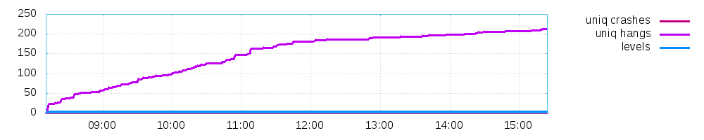</div><div>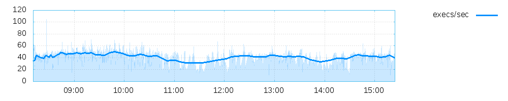</div><h3>lemon-1</h3><table><tr><td>Status:</td><td><b><span style="color: #98DF00">ALIVE</span></b></td></tr><tr><td>Executions:</td><td><b>1,179,996</b></td></tr><tr><td>Current Speed:</td><td><b>46.18</b> execs/second</td></tr><tr><td>Paths Found (Favs/All):</td><td><b>1</b> / <b>12</b></td></tr><tr><td>Pending (Favs/All):</td><td><b>0</b> / <b>0</b></td></tr><tr><td>Stability:</td><td><b>100.00%</b></td></tr><tr><td>Cycle:</td><td><b>323</b></td></tr><tr><td>Last Path:</td><td><b>/</b> ago</td></tr><tr><td>Last Hang:</td><td><b>1 hours 57 minutes 59 seconds</b> ago</td></tr><tr><td>Last Crash:</td><td><b>/</b> ago</td></tr><tr><td>Unique Crashes:</td><td><b>0</b></td></tr></table><div>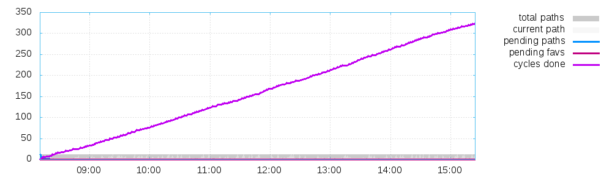</div><div>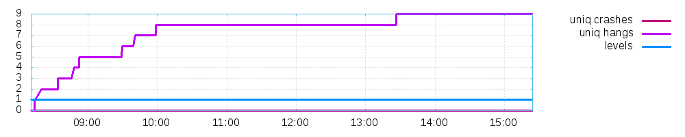</div><div>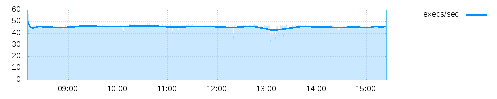</div><h3>lemon-0</h3><table><tr><td>Status:</td><td><b><span style="color: #98DF00">ALIVE</span></b></td></tr><tr><td>Executions:</td><td><b>1,209,584</b></td></tr><tr><td>Current Speed:</td><td><b>47.42</b> execs/second</td></tr><tr><td>Paths Found (Favs/All):</td><td><b>244</b> / <b>2,662</b></td></tr><tr><td>Pending (Favs/All):</td><td><b>200</b> / <b>2,608</b></td></tr><tr><td>Stability:</td><td><b>99.67%</b></td></tr><tr><td>Cycle:</td><td><b>0</b></td></tr><tr><td>Last Path:</td><td><b>0 hours 18 minutes 43 seconds</b> ago</td></tr><tr><td>Last Hang:</td><td><b>0 hours 05 minutes 41 seconds</b> ago</td></tr><tr><td>Last Crash:</td><td><b>/</b> ago</td></tr><tr><td>Unique Crashes:</td><td><b>0</b></td></tr></table><div>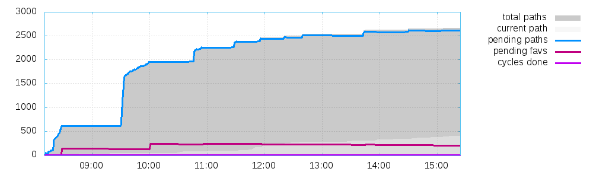</div><div>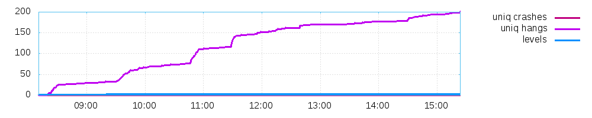</div><div>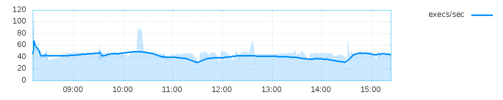</div><h3>lemon-3</h3><table><tr><td>Status:</td><td><b><span style="color: #98DF00">ALIVE</span></b></td></tr><tr><td>Executions:</td><td><b>1,028,278</b></td></tr><tr><td>Current Speed:</td><td><b>42.07</b> execs/second</td></tr><tr><td>Paths Found (Favs/All):</td><td><b>244</b> / <b>3,286</b></td></tr><tr><td>Pending (Favs/All):</td><td><b>8</b> / <b>2,262</b></td></tr><tr><td>Stability:</td><td><b>99.66%</b></td></tr><tr><td>Cycle:</td><td><b>9</b></td></tr><tr><td>Last Path:</td><td><b>0 hours 01 minutes 58 seconds</b> ago</td></tr><tr><td>Last Hang:</td><td><b>0 hours 28 minutes 44 seconds</b> ago</td></tr><tr><td>Last Crash:</td><td><b>1 hours 13 minutes 36 seconds</b> ago</td></tr><tr><td>Unique Crashes:</td><td><b>4</b></td></tr></table><div></div><div>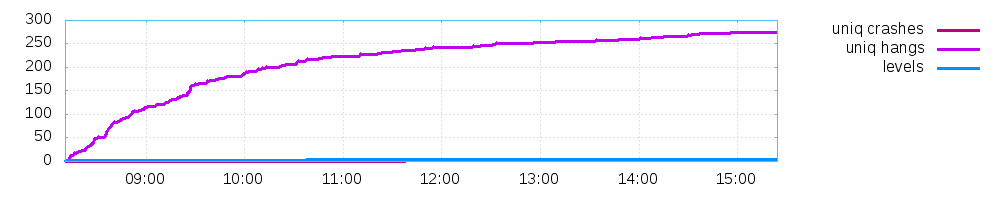</div><div>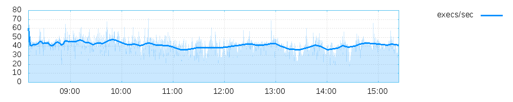</div><h3>lemon-2</h3><table><tr><td>Status:</td><td><b><span style="color: #98DF00">ALIVE</span></b></td></tr><tr><td>Executions:</td><td><b>1,070,814</b></td></tr><tr><td>Current Speed:</td><td><b>45.50</b> execs/second</td></tr><tr><td>Paths Found (Favs/All):</td><td><b>244</b> / <b>3,284</b></td></tr><tr><td>Pending (Favs/All):</td><td><b>2</b> / <b>2,304</b></td></tr><tr><td>Stability:</td><td><b>99.66%</b></td></tr><tr><td>Cycle:</td><td><b>11</b></td></tr><tr><td>Last Path:</td><td><b>0 hours 02 minutes 14 seconds</b> ago</td></tr><tr><td>Last Hang:</td><td><b>0 hours 07 minutes 38 seconds</b> ago</td></tr><tr><td>Last Crash:</td><td><b>3 hours 04 minutes 22 seconds</b> ago</td></tr><tr><td>Unique Crashes:</td><td><b>2</b></td></tr></table><div></div><div>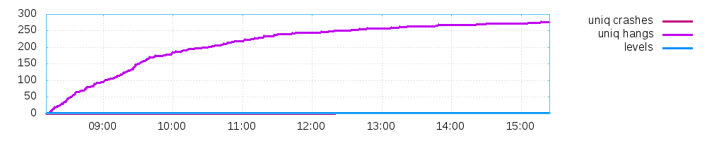</div><div>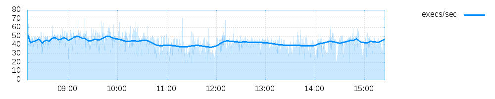</div><h3>lemon-19</h3><table><tr><td>Status:</td><td><b><span style="color: #98DF00">ALIVE</span></b></td></tr><tr><td>Executions:</td><td><b>1,185,835</b></td></tr><tr><td>Current Speed:</td><td><b>43.52</b> execs/second</td></tr><tr><td>Paths Found (Favs/All):</td><td><b>1</b> / <b>12</b></td></tr><tr><td>Pending (Favs/All):</td><td><b>0</b> / <b>0</b></td></tr><tr><td>Stability:</td><td><b>100.00%</b></td></tr><tr><td>Cycle:</td><td><b>342</b></td></tr><tr><td>Last Path:</td><td><b>/</b> ago</td></tr><tr><td>Last Hang:</td><td><b>1 hours 44 minutes 32 seconds</b> ago</td></tr><tr><td>Last Crash:</td><td><b>/</b> ago</td></tr><tr><td>Unique Crashes:</td><td><b>0</b></td></tr></table><div>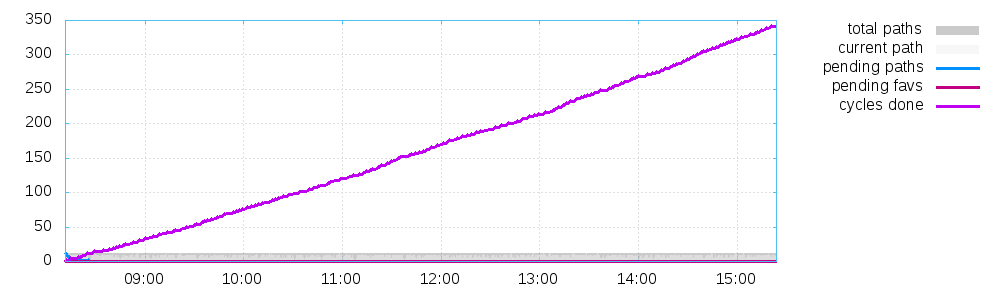</div><div>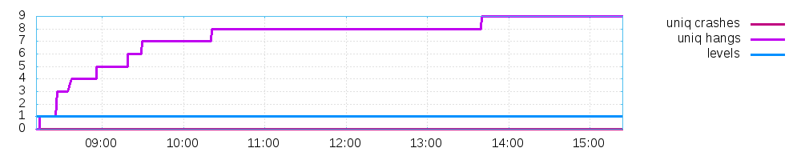</div><div>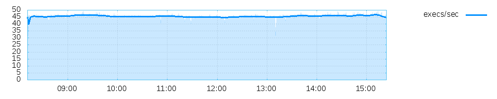</div><h3>lemon-18</h3><table><tr><td>Status:</td><td><b><span style="color: #98DF00">ALIVE</span></b></td></tr><tr><td>Executions:</td><td><b>1,013,405</b></td></tr><tr><td>Current Speed:</td><td><b>46.45</b> execs/second</td></tr><tr><td>Paths Found (Favs/All):</td><td><b>243</b> / <b>3,380</b></td></tr><tr><td>Pending (Favs/All):</td><td><b>1</b> / <b>2,034</b></td></tr><tr><td>Stability:</td><td><b>99.61%</b></td></tr><tr><td>Cycle:</td><td><b>16</b></td></tr><tr><td>Last Path:</td><td><b>0 hours 04 minutes 19 seconds</b> ago</td></tr><tr><td>Last Hang:</td><td><b>0 hours 03 minutes 29 seconds</b> ago</td></tr><tr><td>Last Crash:</td><td><b>3 hours 03 minutes 34 seconds</b> ago</td></tr><tr><td>Unique Crashes:</td><td><b>1</b></td></tr></table><div></div><div>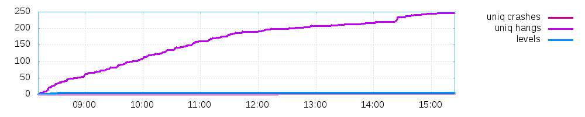</div><div>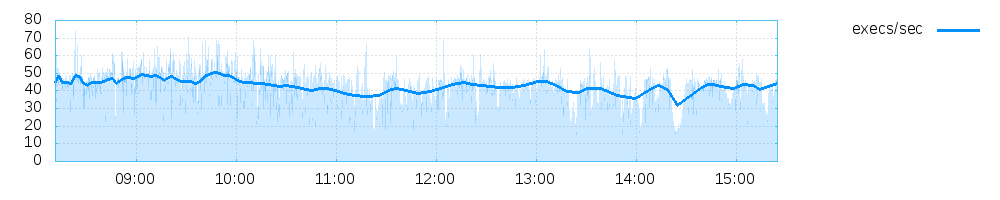</div><h3>lemon-57</h3><table><tr><td>Status:</td><td><b><span style="color: #98DF00">ALIVE</span></b></td></tr><tr><td>Executions:</td><td><b>1,008,256</b></td></tr><tr><td>Current Speed:</td><td><b>44.77</b> execs/second</td></tr><tr><td>Paths Found (Favs/All):</td><td><b>246</b> / <b>3,338</b></td></tr><tr><td>Pending (Favs/All):</td><td><b>0</b> / <b>1,998</b></td></tr><tr><td>Stability:</td><td><b>99.57%</b></td></tr><tr><td>Cycle:</td><td><b>15</b></td></tr><tr><td>Last Path:</td><td><b>0 hours 02 minutes 38 seconds</b> ago</td></tr><tr><td>Last Hang:</td><td><b>0 hours 09 minutes 22 seconds</b> ago</td></tr><tr><td>Last Crash:</td><td><b>0 hours 13 minutes 02 seconds</b> ago</td></tr><tr><td>Unique Crashes:</td><td><b>3</b></td></tr></table><div></div><div>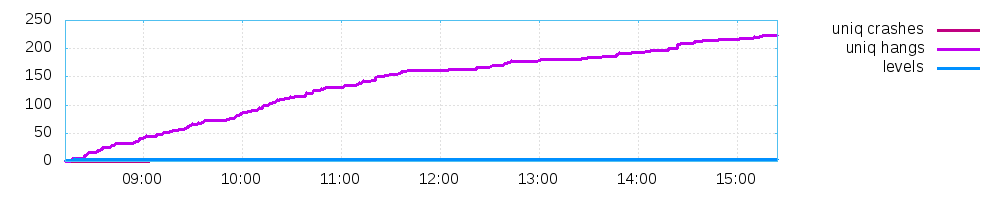</div><div></div><h3>lemon-56</h3><table><tr><td>Status:</td><td><b><span style="color: #98DF00">ALIVE</span></b></td></tr><tr><td>Executions:</td><td><b>979,877</b></td></tr><tr><td>Current Speed:</td><td><b>46.06</b> execs/second</td></tr><tr><td>Paths Found (Favs/All):</td><td><b>252</b> / <b>3,339</b></td></tr><tr><td>Pending (Favs/All):</td><td><b>0</b> / <b>2,124</b></td></tr><tr><td>Stability:</td><td><b>99.64%</b></td></tr><tr><td>Cycle:</td><td><b>16</b></td></tr><tr><td>Last Path:</td><td><b>0 hours 01 minutes 32 seconds</b> ago</td></tr><tr><td>Last Hang:</td><td><b>0 hours 09 minutes 58 seconds</b> ago</td></tr><tr><td>Last Crash:</td><td><b>/</b> ago</td></tr><tr><td>Unique Crashes:</td><td><b>0</b></td></tr></table><div></div><div>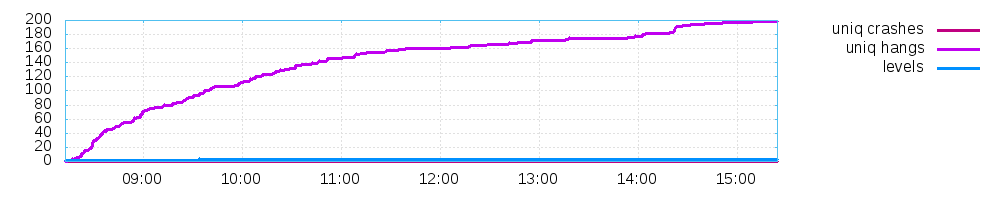</div><div>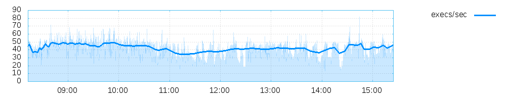</div><h3>lemon-51</h3><table><tr><td>Status:</td><td><b><span style="color: #98DF00">ALIVE</span></b></td></tr><tr><td>Executions:</td><td><b>980,251</b></td></tr><tr><td>Current Speed:</td><td><b>30.33</b> execs/second</td></tr><tr><td>Paths Found (Favs/All):</td><td><b>241</b> / <b>3,351</b></td></tr><tr><td>Pending (Favs/All):</td><td><b>3</b> / <b>2,079</b></td></tr><tr><td>Stability:</td><td><b>99.67%</b></td></tr><tr><td>Cycle:</td><td><b>14</b></td></tr><tr><td>Last Path:</td><td><b>0 hours 02 minutes 29 seconds</b> ago</td></tr><tr><td>Last Hang:</td><td><b>0 hours 12 minutes 02 seconds</b> ago</td></tr><tr><td>Last Crash:</td><td><b>2 hours 50 minutes 37 seconds</b> ago</td></tr><tr><td>Unique Crashes:</td><td><b>2</b></td></tr></table><div></div><div>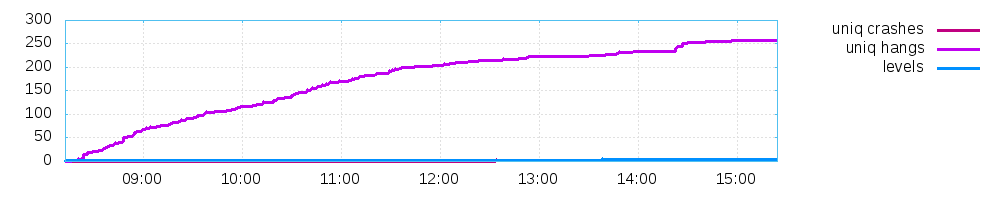</div><div></div><h3>lemon-50</h3><table><tr><td>Status:</td><td><b><span style="color: #98DF00">ALIVE</span></b></td></tr><tr><td>Executions:</td><td><b>963,475</b></td></tr><tr><td>Current Speed:</td><td><b>25.25</b> execs/second</td></tr><tr><td>Paths Found (Favs/All):</td><td><b>256</b> / <b>3,323</b></td></tr><tr><td>Pending (Favs/All):</td><td><b>2</b> / <b>2,151</b></td></tr><tr><td>Stability:</td><td><b>99.69%</b></td></tr><tr><td>Cycle:</td><td><b>13</b></td></tr><tr><td>Last Path:</td><td><b>0 hours 03 minutes 58 seconds</b> ago</td></tr><tr><td>Last Hang:</td><td><b>0 hours 07 minutes 19 seconds</b> ago</td></tr><tr><td>Last Crash:</td><td><b>3 hours 44 minutes 44 seconds</b> ago</td></tr><tr><td>Unique Crashes:</td><td><b>3</b></td></tr></table><div></div><div>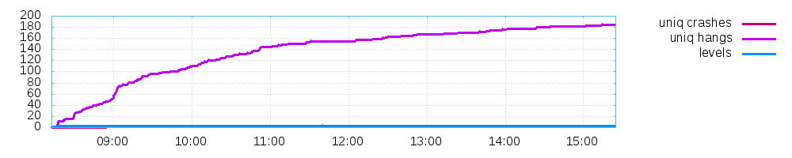</div><div>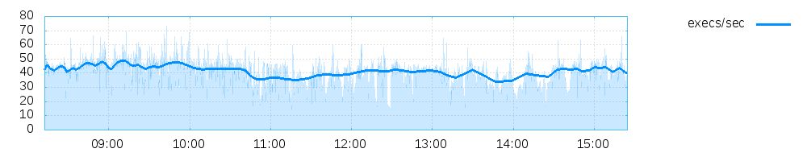</div><h3>lemon-53</h3><table><tr><td>Status:</td><td><b><span style="color: #98DF00">ALIVE</span></b></td></tr><tr><td>Executions:</td><td><b>985,108</b></td></tr><tr><td>Current Speed:</td><td><b>53.96</b> execs/second</td></tr><tr><td>Paths Found (Favs/All):</td><td><b>247</b> / <b>3,356</b></td></tr><tr><td>Pending (Favs/All):</td><td><b>0</b> / <b>2,130</b></td></tr><tr><td>Stability:</td><td><b>99.69%</b></td></tr><tr><td>Cycle:</td><td><b>16</b></td></tr><tr><td>Last Path:</td><td><b>0 hours 04 minutes 03 seconds</b> ago</td></tr><tr><td>Last Hang:</td><td><b>0 hours 42 minutes 14 seconds</b> ago</td></tr><tr><td>Last Crash:</td><td><b>0 hours 12 minutes 21 seconds</b> ago</td></tr><tr><td>Unique Crashes:</td><td><b>2</b></td></tr></table><div></div><div>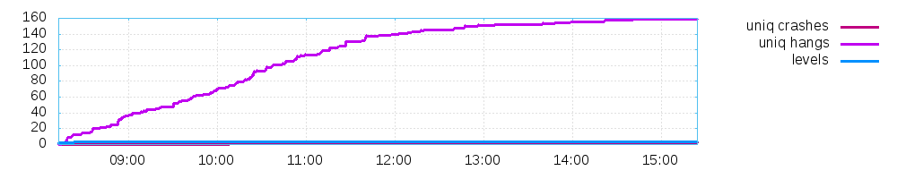</div><div>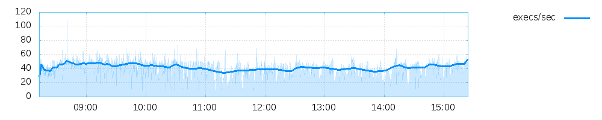</div><h3>lemon-52</h3><table><tr><td>Status:</td><td><b><span style="color: #98DF00">ALIVE</span></b></td></tr><tr><td>Executions:</td><td><b>1,112,588</b></td></tr><tr><td>Current Speed:</td><td><b>44.52</b> execs/second</td></tr><tr><td>Paths Found (Favs/All):</td><td><b>1</b> / <b>12</b></td></tr><tr><td>Pending (Favs/All):</td><td><b>0</b> / <b>0</b></td></tr><tr><td>Stability:</td><td><b>100.00%</b></td></tr><tr><td>Cycle:</td><td><b>325</b></td></tr><tr><td>Last Path:</td><td><b>/</b> ago</td></tr><tr><td>Last Hang:</td><td><b>3 hours 03 minutes 12 seconds</b> ago</td></tr><tr><td>Last Crash:</td><td><b>/</b> ago</td></tr><tr><td>Unique Crashes:</td><td><b>0</b></td></tr></table><div>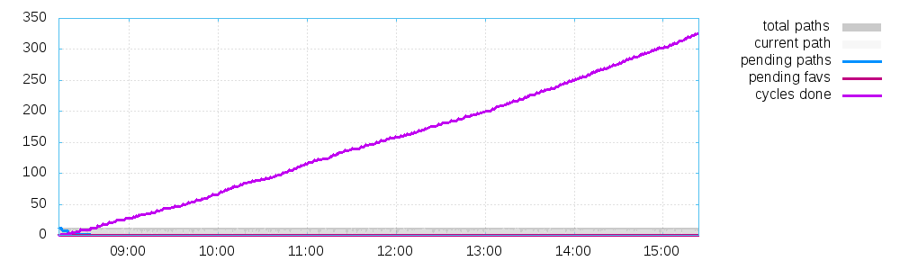</div><div>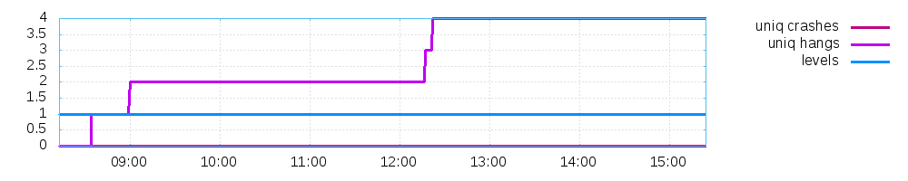</div><div>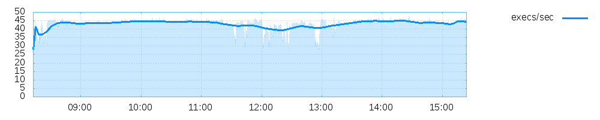</div><h3>lemon-11</h3><table><tr><td>Status:</td><td><b><span style="color: #98DF00">ALIVE</span></b></td></tr><tr><td>Executions:</td><td><b>991,957</b></td></tr><tr><td>Current Speed:</td><td><b>39.00</b> execs/second</td></tr><tr><td>Paths Found (Favs/All):</td><td><b>244</b> / <b>3,374</b></td></tr><tr><td>Pending (Favs/All):</td><td><b>3</b> / <b>2,150</b></td></tr><tr><td>Stability:</td><td><b>99.61%</b></td></tr><tr><td>Cycle:</td><td><b>17</b></td></tr><tr><td>Last Path:</td><td><b>0 hours 04 minutes 18 seconds</b> ago</td></tr><tr><td>Last Hang:</td><td><b>0 hours 21 minutes 58 seconds</b> ago</td></tr><tr><td>Last Crash:</td><td><b>/</b> ago</td></tr><tr><td>Unique Crashes:</td><td><b>0</b></td></tr></table><div></div><div>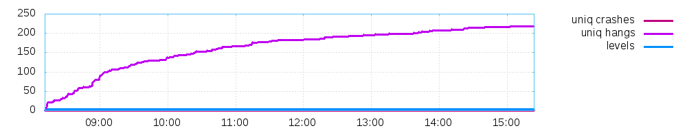</div><div>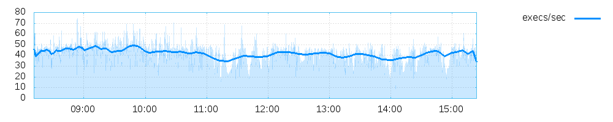</div><h3>lemon-10</h3><table><tr><td>Status:</td><td><b><span style="color: #98DF00">ALIVE</span></b></td></tr><tr><td>Executions:</td><td><b>1,167,743</b></td></tr><tr><td>Current Speed:</td><td><b>44.63</b> execs/second</td></tr><tr><td>Paths Found (Favs/All):</td><td><b>1</b> / <b>12</b></td></tr><tr><td>Pending (Favs/All):</td><td><b>0</b> / <b>0</b></td></tr><tr><td>Stability:</td><td><b>100.00%</b></td></tr><tr><td>Cycle:</td><td><b>344</b></td></tr><tr><td>Last Path:</td><td><b>/</b> ago</td></tr><tr><td>Last Hang:</td><td><b>0 hours 16 minutes 38 seconds</b> ago</td></tr><tr><td>Last Crash:</td><td><b>/</b> ago</td></tr><tr><td>Unique Crashes:</td><td><b>0</b></td></tr></table><div>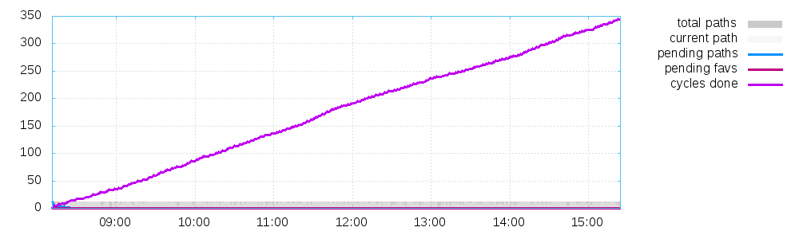</div><div>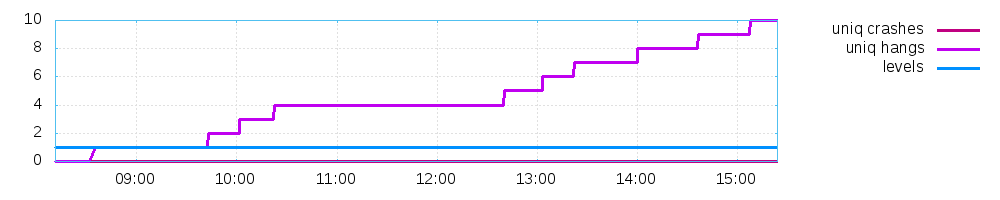</div><div></div><h3>lemon-13</h3><table><tr><td>Status:</td><td><b><span style="color: #98DF00">ALIVE</span></b></td></tr><tr><td>Executions:</td><td><b>1,180,459</b></td></tr><tr><td>Current Speed:</td><td><b>46.13</b> execs/second</td></tr><tr><td>Paths Found (Favs/All):</td><td><b>1</b> / <b>12</b></td></tr><tr><td>Pending (Favs/All):</td><td><b>0</b> / <b>0</b></td></tr><tr><td>Stability:</td><td><b>100.00%</b></td></tr><tr><td>Cycle:</td><td><b>311</b></td></tr><tr><td>Last Path:</td><td><b>/</b> ago</td></tr><tr><td>Last Hang:</td><td><b>0 hours 56 minutes 44 seconds</b> ago</td></tr><tr><td>Last Crash:</td><td><b>/</b> ago</td></tr><tr><td>Unique Crashes:</td><td><b>0</b></td></tr></table><div></div><div></div><div>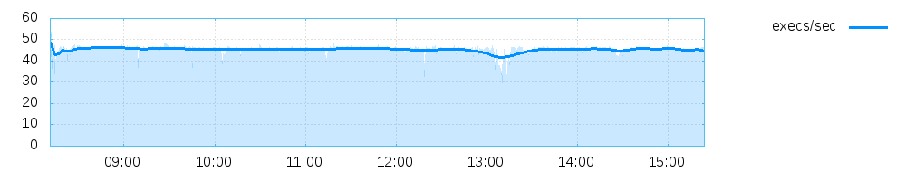</div><h3>lemon-12</h3><table><tr><td>Status:</td><td><b><span style="color: #98DF00">ALIVE</span></b></td></tr><tr><td>Executions:</td><td><b>1,012,364</b></td></tr><tr><td>Current Speed:</td><td><b>42.18</b> execs/second</td></tr><tr><td>Paths Found (Favs/All):</td><td><b>250</b> / <b>3,386</b></td></tr><tr><td>Pending (Favs/All):</td><td><b>0</b> / <b>2,050</b></td></tr><tr><td>Stability:</td><td><b>99.69%</b></td></tr><tr><td>Cycle:</td><td><b>14</b></td></tr><tr><td>Last Path:</td><td><b>0 hours 07 minutes 01 seconds</b> ago</td></tr><tr><td>Last Hang:</td><td><b>0 hours 35 minutes 51 seconds</b> ago</td></tr><tr><td>Last Crash:</td><td><b>0 hours 35 minutes 27 seconds</b> ago</td></tr><tr><td>Unique Crashes:</td><td><b>6</b></td></tr></table><div></div><div>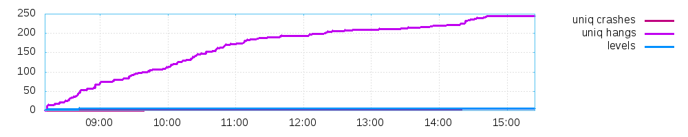</div><div>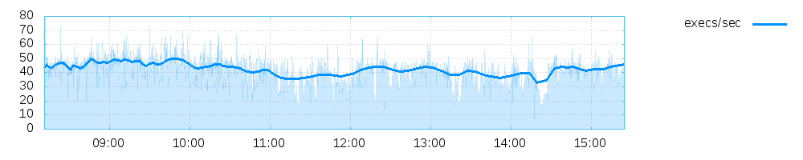</div><h3>lemon-15</h3><table><tr><td>Status:</td><td><b><span style="color: #98DF00">ALIVE</span></b></td></tr><tr><td>Executions:</td><td><b>1,009,734</b></td></tr><tr><td>Current Speed:</td><td><b>46.04</b> execs/second</td></tr><tr><td>Paths Found (Favs/All):</td><td><b>250</b> / <b>3,388</b></td></tr><tr><td>Pending (Favs/All):</td><td><b>3</b> / <b>1,946</b></td></tr><tr><td>Stability:</td><td><b>99.67%</b></td></tr><tr><td>Cycle:</td><td><b>15</b></td></tr><tr><td>Last Path:</td><td><b>0 hours 03 minutes 21 seconds</b> ago</td></tr><tr><td>Last Hang:</td><td><b>0 hours 00 minutes 47 seconds</b> ago</td></tr><tr><td>Last Crash:</td><td><b>3 hours 46 minutes 43 seconds</b> ago</td></tr><tr><td>Unique Crashes:</td><td><b>1</b></td></tr></table><div></div><div>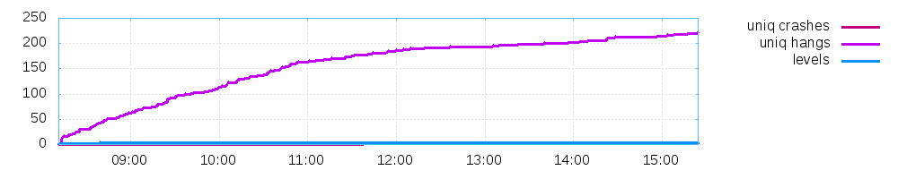</div><div></div><h3>lemon-14</h3><table><tr><td>Status:</td><td><b><span style="color: #98DF00">ALIVE</span></b></td></tr><tr><td>Executions:</td><td><b>1,064,336</b></td></tr><tr><td>Current Speed:</td><td><b>24.40</b> execs/second</td></tr><tr><td>Paths Found (Favs/All):</td><td><b>245</b> / <b>3,300</b></td></tr><tr><td>Pending (Favs/All):</td><td><b>2</b> / <b>2,283</b></td></tr><tr><td>Stability:</td><td><b>99.16%</b></td></tr><tr><td>Cycle:</td><td><b>10</b></td></tr><tr><td>Last Path:</td><td><b>0 hours 03 minutes 36 seconds</b> ago</td></tr><tr><td>Last Hang:</td><td><b>0 hours 06 minutes 14 seconds</b> ago</td></tr><tr><td>Last Crash:</td><td><b>0 hours 13 minutes 29 seconds</b> ago</td></tr><tr><td>Unique Crashes:</td><td><b>2</b></td></tr></table><div></div><div></div><div></div><h3>lemon-17</h3><table><tr><td>Status:</td><td><b><span style="color: #98DF00">ALIVE</span></b></td></tr><tr><td>Executions:</td><td><b>1,072,415</b></td></tr><tr><td>Current Speed:</td><td><b>42.44</b> execs/second</td></tr><tr><td>Paths Found (Favs/All):</td><td><b>249</b> / <b>3,266</b></td></tr><tr><td>Pending (Favs/All):</td><td><b>0</b> / <b>2,280</b></td></tr><tr><td>Stability:</td><td><b>99.61%</b></td></tr><tr><td>Cycle:</td><td><b>11</b></td></tr><tr><td>Last Path:</td><td><b>0 hours 03 minutes 40 seconds</b> ago</td></tr><tr><td>Last Hang:</td><td><b>0 hours 00 minutes 52 seconds</b> ago</td></tr><tr><td>Last Crash:</td><td><b>3 hours 39 minutes 30 seconds</b> ago</td></tr><tr><td>Unique Crashes:</td><td><b>1</b></td></tr></table><div></div><div></div><div></div><h3>lemon-16</h3><table><tr><td>Status:</td><td><b><span style="color: #98DF00">ALIVE</span></b></td></tr><tr><td>Executions:</td><td><b>1,194,834</b></td></tr><tr><td>Current Speed:</td><td><b>46.18</b> execs/second</td></tr><tr><td>Paths Found (Favs/All):</td><td><b>1</b> / <b>12</b></td></tr><tr><td>Pending (Favs/All):</td><td><b>0</b> / <b>0</b></td></tr><tr><td>Stability:</td><td><b>100.00%</b></td></tr><tr><td>Cycle:</td><td><b>360</b></td></tr><tr><td>Last Path:</td><td><b>/</b> ago</td></tr><tr><td>Last Hang:</td><td><b>4 hours 03 minutes 23 seconds</b> ago</td></tr><tr><td>Last Crash:</td><td><b>/</b> ago</td></tr><tr><td>Unique Crashes:</td><td><b>0</b></td></tr></table><div></div><div></div><div></div><h3>lemon-33</h3><table><tr><td>Status:</td><td><b><span style="color: #98DF00">ALIVE</span></b></td></tr><tr><td>Executions:</td><td><b>1,036,342</b></td></tr><tr><td>Current Speed:</td><td><b>49.42</b> execs/second</td></tr><tr><td>Paths Found (Favs/All):</td><td><b>246</b> / <b>3,258</b></td></tr><tr><td>Pending (Favs/All):</td><td><b>0</b> / <b>2,290</b></td></tr><tr><td>Stability:</td><td><b>76.58%</b></td></tr><tr><td>Cycle:</td><td><b>10</b></td></tr><tr><td>Last Path:</td><td><b>0 hours 02 minutes 40 seconds</b> ago</td></tr><tr><td>Last Hang:</td><td><b>0 hours 10 minutes 14 seconds</b> ago</td></tr><tr><td>Last Crash:</td><td><b>0 hours 08 minutes 40 seconds</b> ago</td></tr><tr><td>Unique Crashes:</td><td><b>4</b></td></tr></table><div></div><div></div><div></div><h3>lemon-32</h3><table><tr><td>Status:</td><td><b><span style="color: #98DF00">ALIVE</span></b></td></tr><tr><td>Executions:</td><td><b>1,014,379</b></td></tr><tr><td>Current Speed:</td><td><b>36.73</b> execs/second</td></tr><tr><td>Paths Found (Favs/All):</td><td><b>249</b> / <b>3,380</b></td></tr><tr><td>Pending (Favs/All):</td><td><b>3</b> / <b>2,126</b></td></tr><tr><td>Stability:</td><td><b>99.64%</b></td></tr><tr><td>Cycle:</td><td><b>16</b></td></tr><tr><td>Last Path:</td><td><b>0 hours 03 minutes 58 seconds</b> ago</td></tr><tr><td>Last Hang:</td><td><b>0 hours 00 minutes 52 seconds</b> ago</td></tr><tr><td>Last Crash:</td><td><b>/</b> ago</td></tr><tr><td>Unique Crashes:</td><td><b>0</b></td></tr></table><div></div><div></div><div></div><h3>lemon-31</h3><table><tr><td>Status:</td><td><b><span style="color: #98DF00">ALIVE</span></b></td></tr><tr><td>Executions:</td><td><b>1,192,451</b></td></tr><tr><td>Current Speed:</td><td><b>46.59</b> execs/second</td></tr><tr><td>Paths Found (Favs/All):</td><td><b>1</b> / <b>12</b></td></tr><tr><td>Pending (Favs/All):</td><td><b>0</b> / <b>0</b></td></tr><tr><td>Stability:</td><td><b>100.00%</b></td></tr><tr><td>Cycle:</td><td><b>136</b></td></tr><tr><td>Last Path:</td><td><b>/</b> ago</td></tr><tr><td>Last Hang:</td><td><b>0 hours 27 minutes 54 seconds</b> ago</td></tr><tr><td>Last Crash:</td><td><b>/</b> ago</td></tr><tr><td>Unique Crashes:</td><td><b>0</b></td></tr></table><div></div><div></div><div></div><h3>lemon-30</h3><table><tr><td>Status:</td><td><b><span style="color: #98DF00">ALIVE</span></b></td></tr><tr><td>Executions:</td><td><b>1,007,884</b></td></tr><tr><td>Current Speed:</td><td><b>45.80</b> execs/second</td></tr><tr><td>Paths Found (Favs/All):</td><td><b>248</b> / <b>3,336</b></td></tr><tr><td>Pending (Favs/All):</td><td><b>1</b> / <b>2,093</b></td></tr><tr><td>Stability:</td><td><b>61.36%</b></td></tr><tr><td>Cycle:</td><td><b>15</b></td></tr><tr><td>Last Path:</td><td><b>0 hours 04 minutes 11 seconds</b> ago</td></tr><tr><td>Last Hang:</td><td><b>0 hours 11 minutes 17 seconds</b> ago</td></tr><tr><td>Last Crash:</td><td><b>3 hours 37 minutes 36 seconds</b> ago</td></tr><tr><td>Unique Crashes:</td><td><b>1</b></td></tr></table><div></div><div></div><div></div><h3>lemon-37</h3><table><tr><td>Status:</td><td><b><span style="color: #98DF00">ALIVE</span></b></td></tr><tr><td>Executions:</td><td><b>1,166,181</b></td></tr><tr><td>Current Speed:</td><td><b>41.54</b> execs/second</td></tr><tr><td>Paths Found (Favs/All):</td><td><b>1</b> / <b>12</b></td></tr><tr><td>Pending (Favs/All):</td><td><b>0</b> / <b>0</b></td></tr><tr><td>Stability:</td><td><b>100.00%</b></td></tr><tr><td>Cycle:</td><td><b>346</b></td></tr><tr><td>Last Path:</td><td><b>/</b> ago</td></tr><tr><td>Last Hang:</td><td><b>4 hours 15 minutes 33 seconds</b> ago</td></tr><tr><td>Last Crash:</td><td><b>/</b> ago</td></tr><tr><td>Unique Crashes:</td><td><b>0</b></td></tr></table><div></div><div></div><div></div><h3>lemon-36</h3><table><tr><td>Status:</td><td><b><span style="color: #98DF00">ALIVE</span></b></td></tr><tr><td>Executions:</td><td><b>985,122</b></td></tr><tr><td>Current Speed:</td><td><b>36.86</b> execs/second</td></tr><tr><td>Paths Found (Favs/All):</td><td><b>249</b> / <b>3,320</b></td></tr><tr><td>Pending (Favs/All):</td><td><b>3</b> / <b>1,993</b></td></tr><tr><td>Stability:</td><td><b>99.58%</b></td></tr><tr><td>Cycle:</td><td><b>16</b></td></tr><tr><td>Last Path:</td><td><b>0 hours 03 minutes 45 seconds</b> ago</td></tr><tr><td>Last Hang:</td><td><b>0 hours 10 minutes 22 seconds</b> ago</td></tr><tr><td>Last Crash:</td><td><b>0 hours 52 minutes 43 seconds</b> ago</td></tr><tr><td>Unique Crashes:</td><td><b>1</b></td></tr></table><div></div><div></div><div></div><h3>lemon-35</h3><table><tr><td>Status:</td><td><b><span style="color: #98DF00">ALIVE</span></b></td></tr><tr><td>Executions:</td><td><b>1,066,165</b></td></tr><tr><td>Current Speed:</td><td><b>45.07</b> execs/second</td></tr><tr><td>Paths Found (Favs/All):</td><td><b>254</b> / <b>3,258</b></td></tr><tr><td>Pending (Favs/All):</td><td><b>0</b> / <b>2,267</b></td></tr><tr><td>Stability:</td><td><b>99.66%</b></td></tr><tr><td>Cycle:</td><td><b>11</b></td></tr><tr><td>Last Path:</td><td><b>0 hours 03 minutes 42 seconds</b> ago</td></tr><tr><td>Last Hang:</td><td><b>0 hours 06 minutes 05 seconds</b> ago</td></tr><tr><td>Last Crash:</td><td><b>0 hours 07 minutes 30 seconds</b> ago</td></tr><tr><td>Unique Crashes:</td><td><b>3</b></td></tr></table><div></div><div></div><div></div><h3>lemon-34</h3><table><tr><td>Status:</td><td><b><span style="color: #98DF00">ALIVE</span></b></td></tr><tr><td>Executions:</td><td><b>1,159,254</b></td></tr><tr><td>Current Speed:</td><td><b>45.16</b> execs/second</td></tr><tr><td>Paths Found (Favs/All):</td><td><b>1</b> / <b>12</b></td></tr><tr><td>Pending (Favs/All):</td><td><b>0</b> / <b>0</b></td></tr><tr><td>Stability:</td><td><b>100.00%</b></td></tr><tr><td>Cycle:</td><td><b>149</b></td></tr><tr><td>Last Path:</td><td><b>/</b> ago</td></tr><tr><td>Last Hang:</td><td><b>0 hours 50 minutes 12 seconds</b> ago</td></tr><tr><td>Last Crash:</td><td><b>/</b> ago</td></tr><tr><td>Unique Crashes:</td><td><b>0</b></td></tr></table><div></div><div></div><div></div><h3>lemon-39</h3><table><tr><td>Status:</td><td><b><span style="color: #98DF00">ALIVE</span></b></td></tr><tr><td>Executions:</td><td><b>1,058,123</b></td></tr><tr><td>Current Speed:</td><td><b>43.46</b> execs/second</td></tr><tr><td>Paths Found (Favs/All):</td><td><b>244</b> / <b>3,281</b></td></tr><tr><td>Pending (Favs/All):</td><td><b>0</b> / <b>2,318</b></td></tr><tr><td>Stability:</td><td><b>99.67%</b></td></tr><tr><td>Cycle:</td><td><b>10</b></td></tr><tr><td>Last Path:</td><td><b>0 hours 01 minutes 37 seconds</b> ago</td></tr><tr><td>Last Hang:</td><td><b>0 hours 10 minutes 40 seconds</b> ago</td></tr><tr><td>Last Crash:</td><td><b>0 hours 08 minutes 49 seconds</b> ago</td></tr><tr><td>Unique Crashes:</td><td><b>3</b></td></tr></table><div></div><div></div><div></div><h3>lemon-38</h3><table><tr><td>Status:</td><td><b><span style="color: #98DF00">ALIVE</span></b></td></tr><tr><td>Executions:</td><td><b>1,068,216</b></td></tr><tr><td>Current Speed:</td><td><b>23.94</b> execs/second</td></tr><tr><td>Paths Found (Favs/All):</td><td><b>249</b> / <b>3,280</b></td></tr><tr><td>Pending (Favs/All):</td><td><b>2</b> / <b>2,280</b></td></tr><tr><td>Stability:</td><td><b>99.61%</b></td></tr><tr><td>Cycle:</td><td><b>13</b></td></tr><tr><td>Last Path:</td><td><b>0 hours 02 minutes 40 seconds</b> ago</td></tr><tr><td>Last Hang:</td><td><b>0 hours 14 minutes 20 seconds</b> ago</td></tr><tr><td>Last Crash:</td><td><b>3 hours 06 minutes 45 seconds</b> ago</td></tr><tr><td>Unique Crashes:</td><td><b>2</b></td></tr></table><div></div><div></div><div></div><h3>lemon-55</h3><table><tr><td>Status:</td><td><b><span style="color: #98DF00">ALIVE</span></b></td></tr><tr><td>Executions:</td><td><b>1,186,427</b></td></tr><tr><td>Current Speed:</td><td><b>46.45</b> execs/second</td></tr><tr><td>Paths Found (Favs/All):</td><td><b>1</b> / <b>12</b></td></tr><tr><td>Pending (Favs/All):</td><td><b>0</b> / <b>0</b></td></tr><tr><td>Stability:</td><td><b>100.00%</b></td></tr><tr><td>Cycle:</td><td><b>305</b></td></tr><tr><td>Last Path:</td><td><b>/</b> ago</td></tr><tr><td>Last Hang:</td><td><b>2 hours 06 minutes 13 seconds</b> ago</td></tr><tr><td>Last Crash:</td><td><b>/</b> ago</td></tr><tr><td>Unique Crashes:</td><td><b>0</b></td></tr></table><div></div><div></div><div></div><h3>lemon-54</h3><table><tr><td>Status:</td><td><b><span style="color: #98DF00">ALIVE</span></b></td></tr><tr><td>Executions:</td><td><b>971,995</b></td></tr><tr><td>Current Speed:</td><td><b>42.20</b> execs/second</td></tr><tr><td>Paths Found (Favs/All):</td><td><b>245</b> / <b>3,322</b></td></tr><tr><td>Pending (Favs/All):</td><td><b>0</b> / <b>2,036</b></td></tr><tr><td>Stability:</td><td><b>99.61%</b></td></tr><tr><td>Cycle:</td><td><b>15</b></td></tr><tr><td>Last Path:</td><td><b>0 hours 02 minutes 53 seconds</b> ago</td></tr><tr><td>Last Hang:</td><td><b>0 hours 29 minutes 24 seconds</b> ago</td></tr><tr><td>Last Crash:</td><td><b>0 hours 37 minutes 08 seconds</b> ago</td></tr><tr><td>Unique Crashes:</td><td><b>3</b></td></tr></table><div></div><div></div><div></div><h3>lemon-42</h3><table><tr><td>Status:</td><td><b><span style="color: #98DF00">ALIVE</span></b></td></tr><tr><td>Executions:</td><td><b>958,651</b></td></tr><tr><td>Current Speed:</td><td><b>43.93</b> execs/second</td></tr><tr><td>Paths Found (Favs/All):</td><td><b>244</b> / <b>3,333</b></td></tr><tr><td>Pending (Favs/All):</td><td><b>0</b> / <b>2,021</b></td></tr><tr><td>Stability:</td><td><b>99.55%</b></td></tr><tr><td>Cycle:</td><td><b>13</b></td></tr><tr><td>Last Path:</td><td><b>0 hours 04 minutes 23 seconds</b> ago</td></tr><tr><td>Last Hang:</td><td><b>0 hours 25 minutes 49 seconds</b> ago</td></tr><tr><td>Last Crash:</td><td><b>/</b> ago</td></tr><tr><td>Unique Crashes:</td><td><b>0</b></td></tr></table><div></div><div></div><div></div><h3>lemon-43</h3><table><tr><td>Status:</td><td><b><span style="color: #98DF00">ALIVE</span></b></td></tr><tr><td>Executions:</td><td><b>1,165,148</b></td></tr><tr><td>Current Speed:</td><td><b>44.90</b> execs/second</td></tr><tr><td>Paths Found (Favs/All):</td><td><b>1</b> / <b>12</b></td></tr><tr><td>Pending (Favs/All):</td><td><b>0</b> / <b>0</b></td></tr><tr><td>Stability:</td><td><b>100.00%</b></td></tr><tr><td>Cycle:</td><td><b>351</b></td></tr><tr><td>Last Path:</td><td><b>/</b> ago</td></tr><tr><td>Last Hang:</td><td><b>0 hours 56 minutes 28 seconds</b> ago</td></tr><tr><td>Last Crash:</td><td><b>/</b> ago</td></tr><tr><td>Unique Crashes:</td><td><b>0</b></td></tr></table><div></div><div></div><div></div><h3>lemon-40</h3><table><tr><td>Status:</td><td><b><span style="color: #98DF00">ALIVE</span></b></td></tr><tr><td>Executions:</td><td><b>1,160,120</b></td></tr><tr><td>Current Speed:</td><td><b>40.67</b> execs/second</td></tr><tr><td>Paths Found (Favs/All):</td><td><b>1</b> / <b>12</b></td></tr><tr><td>Pending (Favs/All):</td><td><b>0</b> / <b>0</b></td></tr><tr><td>Stability:</td><td><b>100.00%</b></td></tr><tr><td>Cycle:</td><td><b>130</b></td></tr><tr><td>Last Path:</td><td><b>/</b> ago</td></tr><tr><td>Last Hang:</td><td><b>1 hours 28 minutes 12 seconds</b> ago</td></tr><tr><td>Last Crash:</td><td><b>/</b> ago</td></tr><tr><td>Unique Crashes:</td><td><b>0</b></td></tr></table><div></div><div></div><div></div><h3>lemon-41</h3><table><tr><td>Status:</td><td><b><span style="color: #98DF00">ALIVE</span></b></td></tr><tr><td>Executions:</td><td><b>941,248</b></td></tr><tr><td>Current Speed:</td><td><b>43.72</b> execs/second</td></tr><tr><td>Paths Found (Favs/All):</td><td><b>243</b> / <b>3,329</b></td></tr><tr><td>Pending (Favs/All):</td><td><b>0</b> / <b>2,189</b></td></tr><tr><td>Stability:</td><td><b>99.67%</b></td></tr><tr><td>Cycle:</td><td><b>13</b></td></tr><tr><td>Last Path:</td><td><b>0 hours 02 minutes 37 seconds</b> ago</td></tr><tr><td>Last Hang:</td><td><b>0 hours 00 minutes 43 seconds</b> ago</td></tr><tr><td>Last Crash:</td><td><b>0 hours 13 minutes 44 seconds</b> ago</td></tr><tr><td>Unique Crashes:</td><td><b>4</b></td></tr></table><div></div><div></div><div></div><h3>lemon-46</h3><table><tr><td>Status:</td><td><b><span style="color: #98DF00">ALIVE</span></b></td></tr><tr><td>Executions:</td><td><b>1,126,566</b></td></tr><tr><td>Current Speed:</td><td><b>40.98</b> execs/second</td></tr><tr><td>Paths Found (Favs/All):</td><td><b>1</b> / <b>12</b></td></tr><tr><td>Pending (Favs/All):</td><td><b>0</b> / <b>0</b></td></tr><tr><td>Stability:</td><td><b>100.00%</b></td></tr><tr><td>Cycle:</td><td><b>302</b></td></tr><tr><td>Last Path:</td><td><b>/</b> ago</td></tr><tr><td>Last Hang:</td><td><b>0 hours 10 minutes 57 seconds</b> ago</td></tr><tr><td>Last Crash:</td><td><b>/</b> ago</td></tr><tr><td>Unique Crashes:</td><td><b>0</b></td></tr></table><div></div><div></div><div></div><h3>lemon-47</h3><table><tr><td>Status:</td><td><b><span style="color: #98DF00">ALIVE</span></b></td></tr><tr><td>Executions:</td><td><b>946,117</b></td></tr><tr><td>Current Speed:</td><td><b>43.12</b> execs/second</td></tr><tr><td>Paths Found (Favs/All):</td><td><b>248</b> / <b>3,338</b></td></tr><tr><td>Pending (Favs/All):</td><td><b>2</b> / <b>2,160</b></td></tr><tr><td>Stability:</td><td><b>99.60%</b></td></tr><tr><td>Cycle:</td><td><b>14</b></td></tr><tr><td>Last Path:</td><td><b>0 hours 04 minutes 21 seconds</b> ago</td></tr><tr><td>Last Hang:</td><td><b>0 hours 04 minutes 57 seconds</b> ago</td></tr><tr><td>Last Crash:</td><td><b>/</b> ago</td></tr><tr><td>Unique Crashes:</td><td><b>0</b></td></tr></table><div></div><div></div><div></div><h3>lemon-44</h3><table><tr><td>Status:</td><td><b><span style="color: #98DF00">ALIVE</span></b></td></tr><tr><td>Executions:</td><td><b>928,979</b></td></tr><tr><td>Current Speed:</td><td><b>24.97</b> execs/second</td></tr><tr><td>Paths Found (Favs/All):</td><td><b>247</b> / <b>3,357</b></td></tr><tr><td>Pending (Favs/All):</td><td><b>1</b> / <b>2,202</b></td></tr><tr><td>Stability:</td><td><b>99.60%</b></td></tr><tr><td>Cycle:</td><td><b>13</b></td></tr><tr><td>Last Path:</td><td><b>0 hours 04 minutes 19 seconds</b> ago</td></tr><tr><td>Last Hang:</td><td><b>0 hours 01 minutes 57 seconds</b> ago</td></tr><tr><td>Last Crash:</td><td><b>0 hours 09 minutes 28 seconds</b> ago</td></tr><tr><td>Unique Crashes:</td><td><b>1</b></td></tr></table><div></div><div></div><div></div><h3>lemon-45</h3><table><tr><td>Status:</td><td><b><span style="color: #98DF00">ALIVE</span></b></td></tr><tr><td>Executions:</td><td><b>976,213</b></td></tr><tr><td>Current Speed:</td><td><b>29.18</b> execs/second</td></tr><tr><td>Paths Found (Favs/All):</td><td><b>246</b> / <b>3,334</b></td></tr><tr><td>Pending (Favs/All):</td><td><b>4</b> / <b>2,015</b></td></tr><tr><td>Stability:</td><td><b>99.55%</b></td></tr><tr><td>Cycle:</td><td><b>16</b></td></tr><tr><td>Last Path:</td><td><b>0 hours 02 minutes 26 seconds</b> ago</td></tr><tr><td>Last Hang:</td><td><b>0 hours 00 minutes 55 seconds</b> ago</td></tr><tr><td>Last Crash:</td><td><b>3 hours 39 minutes 47 seconds</b> ago</td></tr><tr><td>Unique Crashes:</td><td><b>1</b></td></tr></table><div></div><div></div><div></div><h3>lemon-48</h3><table><tr><td>Status:</td><td><b><span style="color: #98DF00">ALIVE</span></b></td></tr><tr><td>Executions:</td><td><b>973,943</b></td></tr><tr><td>Current Speed:</td><td><b>23.79</b> execs/second</td></tr><tr><td>Paths Found (Favs/All):</td><td><b>247</b> / <b>3,321</b></td></tr><tr><td>Pending (Favs/All):</td><td><b>1</b> / <b>1,927</b></td></tr><tr><td>Stability:</td><td><b>99.60%</b></td></tr><tr><td>Cycle:</td><td><b>16</b></td></tr><tr><td>Last Path:</td><td><b>0 hours 01 minutes 56 seconds</b> ago</td></tr><tr><td>Last Hang:</td><td><b>0 hours 12 minutes 25 seconds</b> ago</td></tr><tr><td>Last Crash:</td><td><b>3 hours 40 minutes 01 seconds</b> ago</td></tr><tr><td>Unique Crashes:</td><td><b>1</b></td></tr></table><div></div><div></div><div></div><h3>lemon-49</h3><table><tr><td>Status:</td><td><b><span style="color: #98DF00">ALIVE</span></b></td></tr><tr><td>Executions:</td><td><b>1,192,694</b></td></tr><tr><td>Current Speed:</td><td><b>46.78</b> execs/second</td></tr><tr><td>Paths Found (Favs/All):</td><td><b>1</b> / <b>12</b></td></tr><tr><td>Pending (Favs/All):</td><td><b>0</b> / <b>0</b></td></tr><tr><td>Stability:</td><td><b>100.00%</b></td></tr><tr><td>Cycle:</td><td><b>303</b></td></tr><tr><td>Last Path:</td><td><b>/</b> ago</td></tr><tr><td>Last Hang:</td><td><b>4 hours 57 minutes 43 seconds</b> ago</td></tr><tr><td>Last Crash:</td><td><b>/</b> ago</td></tr><tr><td>Unique Crashes:</td><td><b>0</b></td></tr></table><div></div><div></div><div></div><h3>lemon-60</h3><table><tr><td>Status:</td><td><b><span style="color: #98DF00">ALIVE</span></b></td></tr><tr><td>Executions:</td><td><b>977,314</b></td></tr><tr><td>Current Speed:</td><td><b>45.11</b> execs/second</td></tr><tr><td>Paths Found (Favs/All):</td><td><b>251</b> / <b>3,322</b></td></tr><tr><td>Pending (Favs/All):</td><td><b>2</b> / <b>1,994</b></td></tr><tr><td>Stability:</td><td><b>99.69%</b></td></tr><tr><td>Cycle:</td><td><b>13</b></td></tr><tr><td>Last Path:</td><td><b>0 hours 04 minutes 05 seconds</b> ago</td></tr><tr><td>Last Hang:</td><td><b>0 hours 11 minutes 05 seconds</b> ago</td></tr><tr><td>Last Crash:</td><td><b>3 hours 36 minutes 44 seconds</b> ago</td></tr><tr><td>Unique Crashes:</td><td><b>4</b></td></tr></table><div></div><div></div><div></div><h3>lemon-61</h3><table><tr><td>Status:</td><td><b><span style="color: #98DF00">ALIVE</span></b></td></tr><tr><td>Executions:</td><td><b>1,181,970</b></td></tr><tr><td>Current Speed:</td><td><b>46.32</b> execs/second</td></tr><tr><td>Paths Found (Favs/All):</td><td><b>1</b> / <b>12</b></td></tr><tr><td>Pending (Favs/All):</td><td><b>0</b> / <b>0</b></td></tr><tr><td>Stability:</td><td><b>100.00%</b></td></tr><tr><td>Cycle:</td><td><b>333</b></td></tr><tr><td>Last Path:</td><td><b>/</b> ago</td></tr><tr><td>Last Hang:</td><td><b>0 hours 25 minutes 23 seconds</b> ago</td></tr><tr><td>Last Crash:</td><td><b>/</b> ago</td></tr><tr><td>Unique Crashes:</td><td><b>0</b></td></tr></table><div></div><div></div><div></div><h3>lemon-20</h3><table><tr><td>Status:</td><td><b><span style="color: #98DF00">ALIVE</span></b></td></tr><tr><td>Executions:</td><td><b>970,125</b></td></tr><tr><td>Current Speed:</td><td><b>72.51</b> execs/second</td></tr><tr><td>Paths Found (Favs/All):</td><td><b>257</b> / <b>3,363</b></td></tr><tr><td>Pending (Favs/All):</td><td><b>2</b> / <b>2,167</b></td></tr><tr><td>Stability:</td><td><b>99.53%</b></td></tr><tr><td>Cycle:</td><td><b>15</b></td></tr><tr><td>Last Path:</td><td><b>0 hours 04 minutes 11 seconds</b> ago</td></tr><tr><td>Last Hang:</td><td><b>0 hours 05 minutes 20 seconds</b> ago</td></tr><tr><td>Last Crash:</td><td><b>0 hours 40 minutes 40 seconds</b> ago</td></tr><tr><td>Unique Crashes:</td><td><b>1</b></td></tr></table><div></div><div></div><div></div><h3>lemon-21</h3><table><tr><td>Status:</td><td><b><span style="color: #98DF00">ALIVE</span></b></td></tr><tr><td>Executions:</td><td><b>1,013,186</b></td></tr><tr><td>Current Speed:</td><td><b>47.34</b> execs/second</td></tr><tr><td>Paths Found (Favs/All):</td><td><b>253</b> / <b>3,347</b></td></tr><tr><td>Pending (Favs/All):</td><td><b>1</b> / <b>2,014</b></td></tr><tr><td>Stability:</td><td><b>99.60%</b></td></tr><tr><td>Cycle:</td><td><b>15</b></td></tr><tr><td>Last Path:</td><td><b>0 hours 03 minutes 31 seconds</b> ago</td></tr><tr><td>Last Hang:</td><td><b>0 hours 02 minutes 06 seconds</b> ago</td></tr><tr><td>Last Crash:</td><td><b>5 hours 01 minutes 52 seconds</b> ago</td></tr><tr><td>Unique Crashes:</td><td><b>2</b></td></tr></table><div></div><div></div><div></div><h3>lemon-22</h3><table><tr><td>Status:</td><td><b><span style="color: #98DF00">ALIVE</span></b></td></tr><tr><td>Executions:</td><td><b>1,186,929</b></td></tr><tr><td>Current Speed:</td><td><b>47.78</b> execs/second</td></tr><tr><td>Paths Found (Favs/All):</td><td><b>1</b> / <b>12</b></td></tr><tr><td>Pending (Favs/All):</td><td><b>0</b> / <b>0</b></td></tr><tr><td>Stability:</td><td><b>100.00%</b></td></tr><tr><td>Cycle:</td><td><b>302</b></td></tr><tr><td>Last Path:</td><td><b>/</b> ago</td></tr><tr><td>Last Hang:</td><td><b>0 hours 13 minutes 11 seconds</b> ago</td></tr><tr><td>Last Crash:</td><td><b>/</b> ago</td></tr><tr><td>Unique Crashes:</td><td><b>0</b></td></tr></table><div></div><div></div><div></div><h3>lemon-23</h3><table><tr><td>Status:</td><td><b><span style="color: #98DF00">ALIVE</span></b></td></tr><tr><td>Executions:</td><td><b>999,352</b></td></tr><tr><td>Current Speed:</td><td><b>26.75</b> execs/second</td></tr><tr><td>Paths Found (Favs/All):</td><td><b>246</b> / <b>3,370</b></td></tr><tr><td>Pending (Favs/All):</td><td><b>2</b> / <b>2,171</b></td></tr><tr><td>Stability:</td><td><b>99.67%</b></td></tr><tr><td>Cycle:</td><td><b>14</b></td></tr><tr><td>Last Path:</td><td><b>0 hours 04 minutes 08 seconds</b> ago</td></tr><tr><td>Last Hang:</td><td><b>0 hours 06 minutes 25 seconds</b> ago</td></tr><tr><td>Last Crash:</td><td><b>5 hours 42 minutes 45 seconds</b> ago</td></tr><tr><td>Unique Crashes:</td><td><b>1</b></td></tr></table><div></div><div></div><div></div><h3>lemon-24</h3><table><tr><td>Status:</td><td><b><span style="color: #98DF00">ALIVE</span></b></td></tr><tr><td>Executions:</td><td><b>976,316</b></td></tr><tr><td>Current Speed:</td><td><b>37.14</b> execs/second</td></tr><tr><td>Paths Found (Favs/All):</td><td><b>248</b> / <b>3,326</b></td></tr><tr><td>Pending (Favs/All):</td><td><b>3</b> / <b>1,980</b></td></tr><tr><td>Stability:</td><td><b>99.54%</b></td></tr><tr><td>Cycle:</td><td><b>14</b></td></tr><tr><td>Last Path:</td><td><b>0 hours 04 minutes 14 seconds</b> ago</td></tr><tr><td>Last Hang:</td><td><b>0 hours 09 minutes 13 seconds</b> ago</td></tr><tr><td>Last Crash:</td><td><b>3 hours 51 minutes 37 seconds</b> ago</td></tr><tr><td>Unique Crashes:</td><td><b>1</b></td></tr></table><div></div><div></div><div></div><h3>lemon-25</h3><table><tr><td>Status:</td><td><b><span style="color: #98DF00">ALIVE</span></b></td></tr><tr><td>Executions:</td><td><b>1,192,031</b></td></tr><tr><td>Current Speed:</td><td><b>48.03</b> execs/second</td></tr><tr><td>Paths Found (Favs/All):</td><td><b>1</b> / <b>12</b></td></tr><tr><td>Pending (Favs/All):</td><td><b>0</b> / <b>0</b></td></tr><tr><td>Stability:</td><td><b>100.00%</b></td></tr><tr><td>Cycle:</td><td><b>317</b></td></tr><tr><td>Last Path:</td><td><b>/</b> ago</td></tr><tr><td>Last Hang:</td><td><b>0 hours 27 minutes 22 seconds</b> ago</td></tr><tr><td>Last Crash:</td><td><b>/</b> ago</td></tr><tr><td>Unique Crashes:</td><td><b>0</b></td></tr></table><div></div><div></div><div></div><h3>lemon-26</h3><table><tr><td>Status:</td><td><b><span style="color: #98DF00">ALIVE</span></b></td></tr><tr><td>Executions:</td><td><b>994,153</b></td></tr><tr><td>Current Speed:</td><td><b>47.66</b> execs/second</td></tr><tr><td>Paths Found (Favs/All):</td><td><b>249</b> / <b>3,341</b></td></tr><tr><td>Pending (Favs/All):</td><td><b>1</b> / <b>2,118</b></td></tr><tr><td>Stability:</td><td><b>99.58%</b></td></tr><tr><td>Cycle:</td><td><b>15</b></td></tr><tr><td>Last Path:</td><td><b>0 hours 04 minutes 12 seconds</b> ago</td></tr><tr><td>Last Hang:</td><td><b>0 hours 08 minutes 39 seconds</b> ago</td></tr><tr><td>Last Crash:</td><td><b>1 hours 10 minutes 20 seconds</b> ago</td></tr><tr><td>Unique Crashes:</td><td><b>3</b></td></tr></table><div></div><div></div><div></div><h3>lemon-27</h3><table><tr><td>Status:</td><td><b><span style="color: #98DF00">ALIVE</span></b></td></tr><tr><td>Executions:</td><td><b>1,062,699</b></td></tr><tr><td>Current Speed:</td><td><b>46.02</b> execs/second</td></tr><tr><td>Paths Found (Favs/All):</td><td><b>246</b> / <b>3,277</b></td></tr><tr><td>Pending (Favs/All):</td><td><b>1</b> / <b>2,269</b></td></tr><tr><td>Stability:</td><td><b>99.67%</b></td></tr><tr><td>Cycle:</td><td><b>10</b></td></tr><tr><td>Last Path:</td><td><b>0 hours 01 minutes 50 seconds</b> ago</td></tr><tr><td>Last Hang:</td><td><b>0 hours 07 minutes 35 seconds</b> ago</td></tr><tr><td>Last Crash:</td><td><b>0 hours 08 minutes 33 seconds</b> ago</td></tr><tr><td>Unique Crashes:</td><td><b>3</b></td></tr></table><div></div><div></div><div></div><h3>lemon-28</h3><table><tr><td>Status:</td><td><b><span style="color: #98DF00">ALIVE</span></b></td></tr><tr><td>Executions:</td><td><b>1,181,921</b></td></tr><tr><td>Current Speed:</td><td><b>47.05</b> execs/second</td></tr><tr><td>Paths Found (Favs/All):</td><td><b>1</b> / <b>12</b></td></tr><tr><td>Pending (Favs/All):</td><td><b>0</b> / <b>0</b></td></tr><tr><td>Stability:</td><td><b>100.00%</b></td></tr><tr><td>Cycle:</td><td><b>358</b></td></tr><tr><td>Last Path:</td><td><b>/</b> ago</td></tr><tr><td>Last Hang:</td><td><b>1 hours 30 minutes 32 seconds</b> ago</td></tr><tr><td>Last Crash:</td><td><b>/</b> ago</td></tr><tr><td>Unique Crashes:</td><td><b>0</b></td></tr></table><div></div><div></div><div></div><h3>lemon-29</h3><table><tr><td>Status:</td><td><b><span style="color: #98DF00">ALIVE</span></b></td></tr><tr><td>Executions:</td><td><b>989,933</b></td></tr><tr><td>Current Speed:</td><td><b>25.75</b> execs/second</td></tr><tr><td>Paths Found (Favs/All):</td><td><b>245</b> / <b>3,357</b></td></tr><tr><td>Pending (Favs/All):</td><td><b>2</b> / <b>2,160</b></td></tr><tr><td>Stability:</td><td><b>99.60%</b></td></tr><tr><td>Cycle:</td><td><b>13</b></td></tr><tr><td>Last Path:</td><td><b>0 hours 03 minutes 52 seconds</b> ago</td></tr><tr><td>Last Hang:</td><td><b>0 hours 07 minutes 52 seconds</b> ago</td></tr><tr><td>Last Crash:</td><td><b>0 hours 16 minutes 36 seconds</b> ago</td></tr><tr><td>Unique Crashes:</td><td><b>1</b></td></tr></table><div></div><div></div><div></div></body></html>
